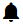

Start Working With CloudStack-UI¶
Содержание
This page is aimed to help you to make first steps at CloudStack-UI. If you have never worked with CloudStack before, you should start with installing the CloudStack platform. Follow the instruction in the official documentation.
Then deploy CloudStack-UI (see the instructions for deployment).
Logging In¶
To enter the platform use your credentials provided by an administrator:
Примечание
Required fields are marked with asterisks (*).
User name * - The user ID of your account.
Password * - The password associated with the user ID.
Domain - Specify domain when you log in. CloudStak-UI supports three ways to do it. Choose the one which is more convenient for you:
- Enter a domain in the field under the «Show advanced options» button .
- Administrator can set a domain in configurations. Domain field will be prepopulated with the specified value. It is more convenient for a user as he/she does not need to enter the domain every time at logging in. In this case the domain field can be hidden by clicking . Find more information on the feature configuration at the configuration guide.
- Other way to log in is to enter a URL in the format
http://<ip-address>/login?domain=<domain>. The domain will be prepopulated in the logging in form with the value that is specified in the URL. Please, note, the domain value in URL will override the domain set in the configurations by Administrator.
Push «Login» to proceed to CloudStack. You will see the first section - Virtual Machines.
To the left you can see the main navigation bar. It allows moving from section to section. It is configured by an Administrator in the configuration file by setting a list of left-sidebar sections there. The Administrator can set it adjustable, i.e. allow a user to reorder elements in the main navigation bar (except the «Logout» section). Please, see the configuration guide for more information on configuring the navigation bar elements.
If the main navigation bar is set to adjustable, you will see a lock  at the top. To change the section order in the menu click the lock to unlock it and change the section order by:
at the top. To change the section order in the menu click the lock to unlock it and change the section order by:
- dragging the section up and down the list,
- enabling/disabling a section by ticking it in the list.
Примечание
You cannot disable the Virtual Machines section. You can only move it within the section list.

The navigation bar can be hidden or extended using the  icon in the upper-left corner. The system remembers the main navigation bar position (collapsed/expanded) after login/logout, reloading a page, moving between sections and within the section.
icon in the upper-left corner. The system remembers the main navigation bar position (collapsed/expanded) after login/logout, reloading a page, moving between sections and within the section.
Resource Usage¶
In this section you can see the resource statistics: used and free VMs, computational resources, volumes and storage space.
Unfold Resource Usage panel in the upper part of the screen. It provides information on the following resources:
- Virtual machines;
- Computational resources - CPU, RAM;
- Volumes and snapshots;
- Storage - primary and secondary.
You can switch between used or free resources by clicking the option you need above the resource data list.
A user can see the resource usage statistics for his/her user only.

A Domain Administrator can view resources for his/her account and for the whole domain.

Notifications on Pending Operations¶
In the upper-right corner of the screen, you can see the list of pending operations by clicking a bell button . It informs you of the latest operations in the system. You can clear the list after its reviewing by deleting every notification one by one or by clicking «CLEAR ALL» at the list bottom.

Alongside with the notification panel, the action completion confirmation additionally appears in the snackbar notification at the page bottom.

In case of errors at data loading the snackbar also notifies of them. In this case it has a refresh button that refreshes the whole app.